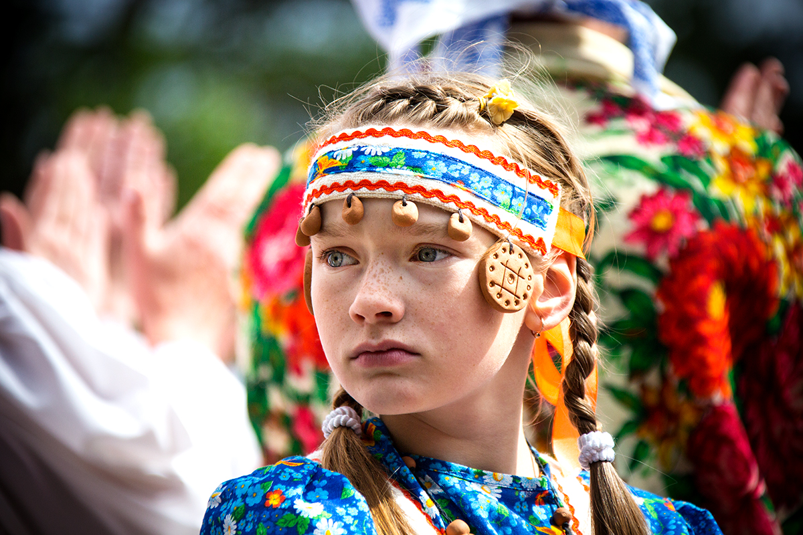
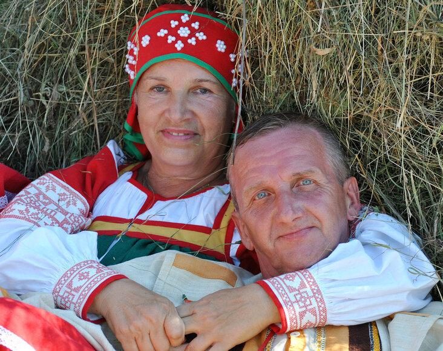
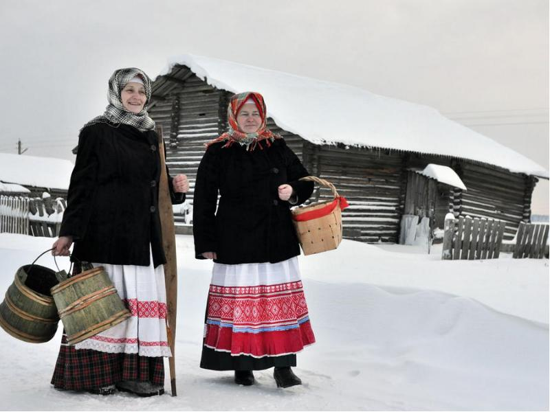
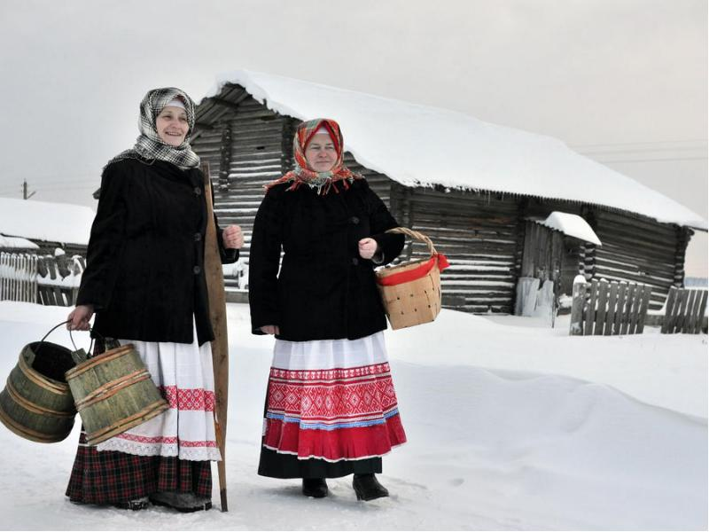
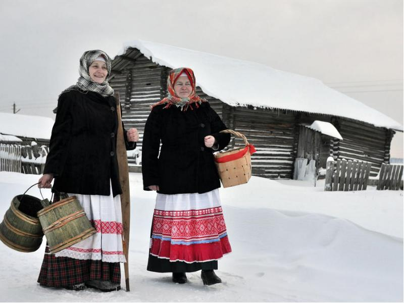

Слово «чудь» родственно словам «чудный, чужой, чуждый». Есть мнение, что «чудными или чужими» для местных племен были готы, а значит, вепсы – это готы. С такой лингвистической теорией не согласны историки. Первое упоминание вепсов появилось в VI веке в работе остготского историка Иордана, посвященной деяниям готов. Иордан перечисляет племена, которые покорил король остготов Германарих в IV веке. В числе прочих – Vas, Vasina. Эти названия близки к «весь» и самоназванию «вепсы».

Второе объяснение термина касается «чудной» внешности чуди белоглазой, как называли заволочских чудинов. Они казались непривычными местным жителям. Чудь белоглазую ассоциируют со скандинавскими гномами, европейскими фейри и эльфами. Чудины занималась охотой, рыболовством и земледелием. Слыли искусными мастерами в работе с металлами.
Первые антропологические описания внешности вепсов предоставил финский врач и этнограф Элиас Лённрот в 1842 году, а затем русский этнограф Владимир Майнов в 1870-м. Описание последнего более понятно, поскольку ученый сравнивал вепсов с русскими, выделяя отличия:
круглая форма черепа;
раскосые светлые глаза (серые, голубые);
ярко выраженные скулы;
широкий курносый нос, немного сплющенный;
красивые дугообразные брови;
маленький четко очерченный рот;
цвет бороды на 2–3 тона светлее волос на голове;
рост выше среднего: 1,69 м для мужчин и 1,62 м для женщин.

Не забыл Майнов и проблему белых глаз. Этнограф писал, что белыми они казались живущим рядом племенам коми, у которых глаза черного или карего цвета. У финских саамов, соседствующих с вепсами, глаза зеленого или темно-серого цвета. Соответственно, саамам вепсы не казались «чудными».
Особенности национального костюма
Женская одежда состоит из рубахи и юбки. Верх юбки дополняет широкая цветная кайма. Подол подвязывали. Поверх юбки хозяйка надевала передник, а голову обвязывала платком.
Мужской национальный костюм – рубаха-косоворотка и полосатые льняные штаны. Дополняют его плетенный пояс, картуз и сапоги. В древности вепсы плели лапти из бересты. Зимний наряд дополняли кафтаном или тулупом. Летнюю одежду шили из холста, зимнюю – из шерстяных тканей.

Узор по воротнику и краю одежды вышивали красной нитью. Красный цвет символизирует жизнь и солнце. Вышивка рассматривалась как оберег, обращение к духам за защитой, удачей, здоровьем. Женщины вышивали растительные орнаменты, птиц и солярные символы. Дополняли наряд стеклянными бусами, кольцами и серьгами.
 Мужской национальный костюм – рубаха-косоворотка и полосатые льняные штаны. Дополняют его плетенный пояс, картуз и сапоги. В древности вепсы плели лапти из бересты. Зимний наряд дополняли кафтаном или тулупом. Летнюю одежду шили из холста, зимнюю – из шерстяных тканей.

Узор по воротнику и краю одежды вышивали красной нитью. Красный цвет символизирует жизнь и солнце. Вышивка рассматривалась как оберег, обращение к духам за защитой, удачей, здоровьем. Женщины вышивали растительные орнаменты, птиц и солярные символы. Дополняли наряд стеклянными бусами, кольцами и серьгами.
Мужской национальный костюм – рубаха-косоворотка и полосатые льняные штаны. Дополняют его плетенный пояс, картуз и сапоги. В древности вепсы плели лапти из бересты. Зимний наряд дополняли кафтаном или тулупом. Летнюю одежду шили из холста, зимнюю – из шерстяных тканей.

Узор по воротнику и краю одежды вышивали красной нитью. Красный цвет символизирует жизнь и солнце. Вышивка рассматривалась как оберег, обращение к духам за защитой, удачей, здоровьем. Женщины вышивали растительные орнаменты, птиц и солярные символы. Дополняли наряд стеклянными бусами, кольцами и серьгами.